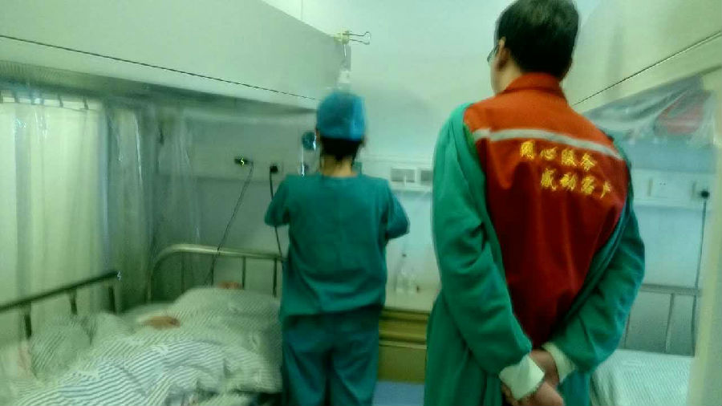
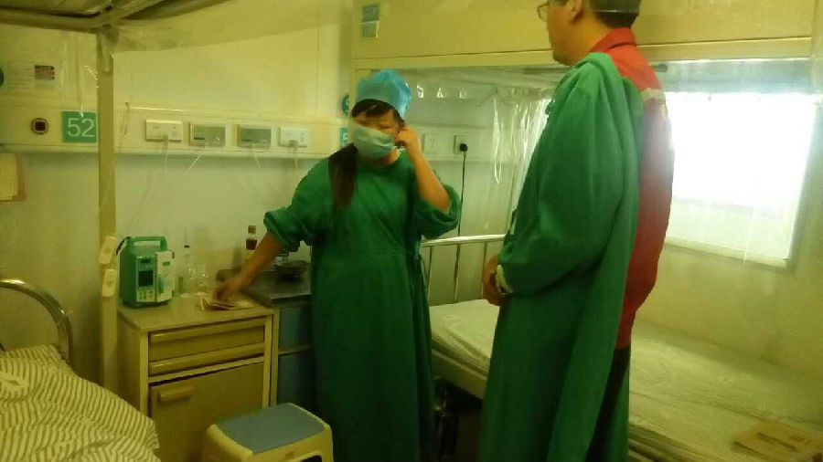
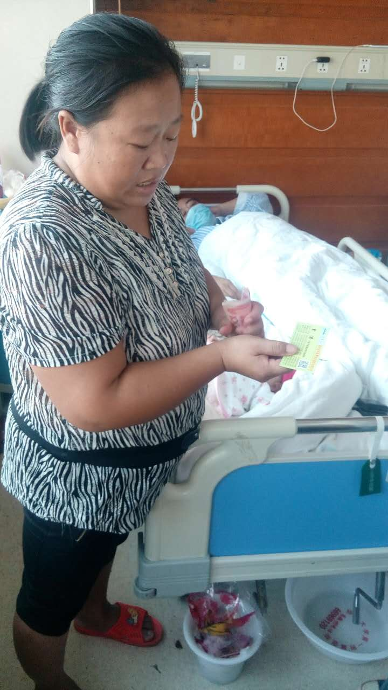

发布: 王婵 2015/10/4 17:25:58
随着传统企业开始尝试线下+线上转型，“互联网+”概念被提出，家政行业中老牌家政公司也在试图从线上获取更多流量，纷纷建立线上平台。而家政领域新入场者，通过轻模式对家政公司进行资源整合，以“淘宝式”平台切入家政O2O。本文据现今家政公司所获融资情况，对家政O2O公司进行盘点。
已上市：58到家、小羽佳、木兰花
一、58到家是58同城在移动互联网时代的二次革命，是58同城由分类信息半闭环服务向O2O闭环服务转型的一步棋。58到家成立于2014年11月，58同城创立元老陈小华出任CEO，58到家将以投资或开放合作的方式不断增加合作伙伴。
二、小羽佳成立于2010年7月，隶属厦门小羽佳家政股份有限公司，创始人为翟焰，是一家集保洁、月嫂保姆等服务为一体的综合型家政服务公司，于2015年2月4日挂牌新三板。据小羽佳2015半年度财报显示，面对2015上半年其他家政平台的低价冲击，小羽佳将积极研发新产品，寻找新的盈利增长点。报告期内，小羽佳实现营收19168476.42元，较上年同期增长7.03%。
三、木兰花成立于2006年7月，隶属湖北木兰花家政服务股份有限公司，总经理为熊英，是一家主营家庭保洁、保姆月嫂等服务的家政公司，采用“员工制”，与员工、客户形成长期稳定合作关系，于2014年10月获准在新三板挂牌。据网上公开消息，木兰花自成立之初就受到湖北省各级领导的支持，副省长张岱梨亲自为木兰花公司成立揭牌，省妇联主席梁惠玲亲临木兰花公司及木兰花学校调研指导工作，是湖北省“十一五”经济和社会发展规划重点扶持企业。
B轮及以上：e家洁、阿姨帮、好慷在线、管家帮
四、e家洁成立于2013年6月，是一个为用户提供家庭保洁服务的O2O平台，隶属于北京新车云信息技术有限公司，CEO为云涛。所获融资情况为：2012年10月获得金种子创投天使轮投资，2013年9月获得腾信400万元种子天使投资；2014年9月获得盛大资本和腾讯共400万美元的A轮投资；2015年2月获得腾讯、德同资本等共计数千万美元的B轮投资；2015年7月获得腾讯、德同资本等亿元以上C轮投资。
五、阿姨帮成立于2013年7月，基于LBS，帮助用户朝找预约保洁工，提供专业家庭保洁服务，创始人为万勇。所获融资情况为：2013年7月获得雷军数百万元种子天使；2013年12月获得联创策源和雷军数百万美元的A轮投资；2014年10月获得祥峰投资及A轮融资方共计数千万美元的B轮融资。
六、好慷在线成立于2010年3月，是一个为用户提供在线预订包年家政服务的家政服务平台，隶属于厦门好慷家政服务有限公司，创始人为李彬。所获融资情况为：2014年8月获坚果资本数千万元A轮投资；2015年8月获赛富基金等7000万元B轮投资。
七、管家帮成立于2006年1月，是一个主打本地生活和家庭服务的O2O平台，为用户提供家政服务、养老服务、健康服务、代价服务等便民服务，隶属于北京易盟天地信息技术有限公司，董事长为傅彦生。所获融资情况为：2011年7月获得5000万元A轮融资，由天图资本投资；2015年5月获得1.2亿元B轮融资，投资方不明。
A轮阶段：家政无忧、云家政、e家帮、小马管家、阿姨来了、无忧保姆
八、家政无忧成立于2014年6月，是一个对接雇主和阿姨的家政服务在线预约平台，隶属于广州帮亿信息科技有限公司，创始人为屈健强。已获得A轮投资，投资情况不明。
九、云家政成立于2010年10月，是一个“淘宝式”的家政服务平台，链接家政公司和服务需求用户，隶属于上海家谐网络科技有限公司，CEO为薛帅。所获融资情况为：2012年5月获得中路资本种子天使投资，金额不详；2014年12月获得蓝驰创投数千万美元的A轮融资。
十、e家帮成立于2014年5月，是一个P2P模式家政钟点工在线搜索预订平台，隶属于广州互缘网络科技有限公司，CEO为熊斌。所获融资情况为：2014年7月获得创新谷Innovalley数百万人民币的种子天使融资；2015年4月获得东方富海1000万元Pre-A融资。
十一、小马管家成立于2014年4月，是一个提供家庭保洁、家电清洗的家政O2O平台，隶属于北京小马飞捷网络科技有限公司，CEO为马晨飞。所获融资情况为：2014年12月获得经纬中国数百万美元的A轮投资；2015年7月获得经纬中国和浙商创投5000万元A+轮融资。
十二、阿姨来了成立于2013年4月，是一家打造经纪人制度，通过经纪人来协调用户和阿姨关系的家政O2O平台，隶属于北京嘉乐会家政服务有限公司。CEO为周袁红。所获融资情况为：2014年8月，获得清科创投数百万美元的A轮融资，天使轮不详。
十三、无忧保姆成立于2008年5月，是一个线上线下结合的家政服务平台，为用户提供一站式保姆、小时工、月嫂等育儿服务，隶属于北京家事无忧家政服务有限公司，CEO为陶睿。所获融资情况为：种子天使于2014年9月完成，获挚盈资本500万元投资；A轮融资2000万元，由e袋洗、天瑞资本以及天使投资机构挚盈资本投资。到目前为止，已有16万保姆入驻无忧保姆平台，在北京、上海、广州、深圳等十个城市展开业务，预计今年内能在15个城市开展业务。
天使轮：牛家帮
十四、牛家帮成立于2014年4月，是一个提供标准化家庭保洁服务的家政公司，隶属于上海腾牛电子商务有限公司，CEO为刘洋。所获融资情况为：2014年10月获英诺天使和大河创投数百万人民币的种子天使投资。
家政篇主要盘点家政服务中上门家政服务O2O平台，此前已做过对洗涤O2O平台的盘点，在此不做赘述。现今较为被人熟知的家政O2O平台中，完成A轮融资所占比重大于所获B轮及以上融资，初创平台仍在不断衍生。家政上门服务，安全性和服务质量是痛点，也是卖点，抓住要点才有超越同类同期平台的可能。已或B轮投资平台谁能更进一步，B轮以下平台谁更具竞争力，且看市场检验。
发布: 王婵 2015/8/21 16:46:53
一位鹤壁女孩身患重病目前在郑州市肿瘤医院血液科，从孩子患病以来一直是由母亲亲自照顾，孩子的两位父亲对此不管不问，已入院2个月就在10月6号的时候由于没有后续的医疗费用已经停药，鸿基梦集团知道此事件后及时安排工作人员与其家人联系并在今天送去了我们的第一笔梦基金，使其能够继续的治疗，并表示会一直关注后续的发展。也希望各界爱心人士可以去帮助一下这个渴望成长的生命。


发布: 王婵 2015/8/21 16:46:27
“泣血求助，救救俺爸!如哪位好心人和老板能救助俺爸，我兄弟俩愿给他们免费打工十年!”9月20日上午，郑州市紫荆山立交桥下，两名男子撑着写满求救信的白色纸板，与抱着刚满两月的婴儿的年轻女子，跪在地上售卖爱心人士捐赠的月饼。市民纷纷驻足询问，并向他们伸出援手。
据鸿基梦集团梦基金工作人员了解，两名男子陈志豪、陈家乐兄弟是河南省周口市西华县叶埠口乡上徐村人，他们兄弟俩一个21岁，一个17岁。现在因其父亲身患绝症，巨额医疗费用无力承担，无奈之下将爱心人士赠送的两盒月饼拿出来售卖，月饼不定价，多少随心意。公司了解到这一情况后主动启动梦基金，专程安排工作人员到医院看望他们，并带去2000元梦基金，希望给这个家庭一些帮助。
陈氏兄弟的父亲名为陈宝新，现年43岁，目前正在郑州大学第一附属医院血液科接受治疗。医生介绍，陈宝新病情不太乐观。
如果想对他们伸出援手，请联系柳新卫(陈宝新妻子)13083788084，中国邮政6217994920005125944


发布: 张倩倩 2015/8/21 16:45:50
1、插花时，切口用打火机烤一下，让花呈现脱水状态，增加吸水力。秋天的时候，可在水里放些糖。这样，花能更持久的保持状态。
2、几个除蚜虫的小办法。
养花的过程中，蚜虫难免出现。喷洒农药太麻烦，有几个简单的办法。可以把牛奶喷洒在蚜虫上，使其窒息。或者用40~50个烟蒂，做成尼古丁水，毒死它。蒜泥也可以。或者撒些醋。害虫不喜欢醋。
3、如何洗防滑地垫。
在垃圾袋里加水，洗衣粉，84消毒液（好东西啊，还有漂白作用的类，白色的衣物如果发黄了，脏东西洗不掉，都可以拿这个来拯救，口布也可以拿这个漂白，居家必备，注意放在小孩拿不到的地方），浸泡并刷洗。长期使用后，拖把也用这种方法清洁。
甚至砧板都可以用这种方法来漂白，砧板长期使用后，会变黄，这时把一块泡有84消毒液的抹布铺在砧板上，静置，洗干净。
4、地上如有干的脏东西，可先用湿热的纸巾泡在那里，然后再清洁。
标签用吹风机吹一下，然后再洗。就可以彻底清洗干净。
烧焦了的锅子，加水，放点洗洁精烧十分钟再洗。
用盐巴来除茶垢。
用牙膏来清洁电器、家具、水槽、墙壁等。牙膏还能在墙壁上贴画，保证不留印子。
洗手台等地方的污渍为碱性，所以可以拿醋来清洗。
如果下水道太臭，可以倒点醋，静置半天，然后再冲掉。
橡皮擦可以拿来擦家具。
牙膏里的研磨剂能洗出光亮如新的玻璃杯来。
小苏打包在纸巾里，能除鞋子的臭味。
下水口容易积头发，可以在滤网上套一个丝袜块，等上面积满脏东西，就可以连丝袜一起扔了。
肥皂头包在旧丝袜里，洗水槽。
5、小道具。
丝袜因为静电效应，对影音电器的除尘有出色的效果。
纱窗可贴上报纸再喷清洁剂，利用报纸的吸附力，轻松除尘。同理，墙上瓷砖如果油污太顽固，
可以拿纸巾贴上去，喷清洁剂，静置，撕下即可。或者直接拿保鲜膜贴在墙上，以后脏了，直接
把保鲜膜撕掉就可以了，这个方法适合厨房等重灾区。
报纸还能用于吸附、清除台面上的油污。
旧牙刷可用来清洁窗轨道、出水口等不容易清理的小地方。
擦洗百叶窗时，可用一块硬纸板托住后面，另一个手在前面擦就方便多了。
百洁布包在一次性筷子上，刷厕所便槽里的污垢。
6、餐具先把油污倒掉再洗，否则越洗越油。很关键哦，老关深有体会。洗之后用热水冲一次，既能
消毒，又快干，并且无水痕残留。
咖啡渣和茶叶渣可以包在丝袜里，放在冰箱里除臭。因为咖啡渣有活性炭的作用。但是要注意，
用过的咖啡渣很容易招小虫子。那个小虫子很恶心的。一说起来，老关身上就痒了。
如果面包被吐司机烤焦了，那相当于也是活性碳，也可以拿来除臭。
清洗冰箱可用茶水或者把醋加在水里清洗，又除味又环保又放心。
7、我们切柠檬片的时候，两边蒂上的白囊不能拿来泡柠檬水，但是可以废物利用哦。这是我在世贸
学来的。把它泡在热水里，拿这个水泡过的杯子，很容易擦干净，放在灯光下一照，一点水痕没
有。
烤箱和微波炉在长期使用后，也可以用这种方法清洗。柠檬加热水，烤约十分钟，再清洗，又容
易又除臭。
发布: 张倩倩 2015/8/21 16:40:40
郑州鸿基梦家政有限公司旗下家政APP正式在今日上线；还有充值优惠等你来拿。